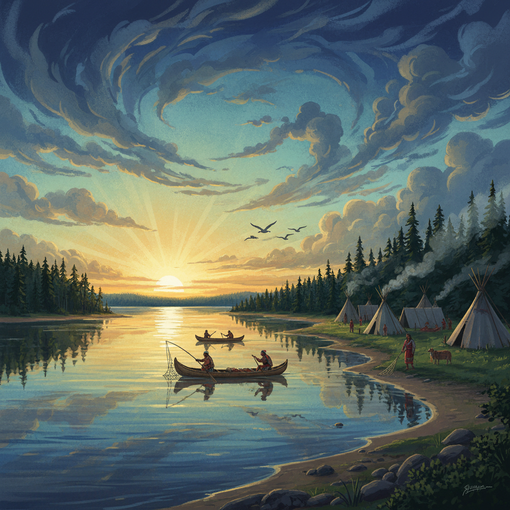

Le vent, le ciel et le souffle
Même fil que dans la série : spiritualité nouée au territoire, sites où la Terre monte jusqu’au ciel (article 16 du catalogue), voyage des corps célestes (article 10). Ici : l’air, porteur de saison, odeur et voix.
Même fil que dans la série : spiritualité nouée au territoire, sites où la Terre monte jusqu’au ciel (article 16 du catalogue), voyage des corps célestes (article 10). Ici : l’air, porteur de saison, odeur et voix.
Chez de nombreuses Premières Nations, on apprenait le temps comme on apprend un récit : forme du voile avant l’orage, direction du vent après le passage d’oiseaux migrateurs, fumée du foyer qui monte droite ou se plie selon l’air avant la pluie. Ces repères s’inscrivent dans la même veine que les fiches du catalogue sur la spiritualité, les sites sacrés ou l’environnement — le ciel y est traité comme milieu de vie, pas comme arrière-plan décoratif.

Le vent change l’odeur de la forêt et du grand eau avant que l’orage n’arrive. Suivre ces signes servait à préparer le camp, fermer la tente au bon moment ou différer une sortie en canot — le même souci de prudence ancestrale dont parlent les textes sur les navigateurs de forêt (article 35) et sur l’environnement (article 23), sans en refaire le cours ici.

Beaucoup de chants et de prières anciennes supposent une direction : la voix ou la fumée légère monte avec le même respect qu’on accorde à un invité qu’on accueille du bon côté du feu. Cela relève d’une logique domestique et spirituelle proche des articles du catalogue sur les rites de passage et la famille — le souffle lié au ciel autant qu’à la terre.

Parler vent et souffle, ce n’est ni une mode ni une mise en spectacle : dans la lignée du catalogue nord-américain, c’est reconnaître que le ciel a longtemps été partie du territoire habité attentivement, comme les rivages et les bois. Les articles sur les langues, les sites sacrés ou l’astronomie complètent ce sujet ; ce cinquante-et-unième texte n’a vocation qu’à en poser quelques pierres.